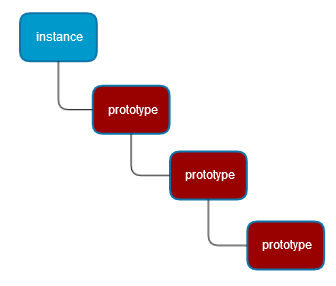

Andrzej Matłosz
andrzej.matlosz@gmail.com
var obj = {};
obj.name = 'Jack';
obj.sayHello = function () {
return 'Hi, ' + this.name;
};
obj.sayHello(); // Hi, Jack
var obj = {
name: 'Jack',
sayHello: function () {
return 'Hi, ' + this.name;
}
};
let obj = {
x() {
console.log('inside x method');
},
y() {
console.log('inside y method');
}
};
obj.x(); //inside x method
let x = 2, y = 3;
let obj2 = {x, y}; // short version of obj2 = { x: x , y: y };
console.log(obj2.x); // 2
console.log(obj2.y); // 3
let prefix = 'user_';
let obj = {
foo() { return 20; },
[prefix + 'foo']: function() { return 10; },
[prefix + 'boo']: 5
};
console.log(obj.foo()); // 20
console.log(obj.user_foo()); // 10
console.log(obj.user_boo); // 5
var Person = {
sayHello: function () {
return 'Hi ' + this.name + '!';
}
};
var obj = Object.create(Person);
obj.name = 'Damian';
var obj2 = Object.create(Person);
obj.name = 'Zdzichu';
obj.sayHello(); // Hi Damian!
obj2.sayHello(); // Hi Zdzichu!
obj.sayHello === obj2.sayHello; // true
var Dog = {
run: function () {
return 'I run!';
},
bark: function () {
return 'Hau! Hau!';
}
};
var dog = Object.create(Dog);
console.log(dog.bark()); // Hau! Hau!
var SmallDog = Object.create(Dog);
SmallDog.bark = function () {
return 'pi pi pi';
}
var smallDog = Object.create(SmallDog);
console.log(smallDog.run()); // I run!
console.log(smallDog.bark()); // Pi pi pi
var Dog = {
run() {
return 'I run!';
},
bark() {
return 'Hau! Hau!';
}
};
var dog = {};
Object.setPrototypeOf(dog, Dog);
console.log(dog.bark()); // Hau! Hau!
var SmallDog = {
bark() {
return 'pi pi pi';
}
}
Object.setPrototypeOf(SmallDog, Dog);
var smallDog = {};
Object.setPrototypeOf(smallDog, SmallDog);
console.log(smallDog.run()); // I run!
console.log(smallDog.bark()); // Pi pi pi
let o1 = {
foo () {
console.log('o1:foo');
}
};
let o2 = {
foo () {
super.foo();
console.log('o2:foo');
}
};
Object.setPrototypeOf(o2, o1);
o2.foo(); // o1:foo o2:foo

obj.prototype; // NO!
obj.__proto__;
Object.getPrototypeOf(obj);
obj.hasOwnProperty(prop) Lesson3/code/animals
var arr = new Array();
var obj = new Object();
var myInst = new MyClass();
function MyClass() {
}
var inst = new MyClass();
var Person = function (name) {
this.myName = name;
this.age = 18;
this.doSmth = function () {}
}
var inst1 = new Person('Gucio'), inst2 = new Person('Zdzisio');
inst1.myName; // Gucio
inst1.doSmth();
inst1.doSmth !== inst2.doSmth; // true
var Person = function (name) {
this.myName = name;
}
Person.prototype.sayHello = function () {
return 'Hi I am ' + this.myName + '.';
};
var dev1 = new Person('Damian');
var dev2 = new Person('Pawel');
dev1.sayHello === dev2.sayHello;
dev1.sayHello(); // Hi I am Damian.
dev2.sayHello(); // Hi I am Pawel.
class Cat {
constructor(name) {
this.name = name;
}
speak() {
console.log(this.name + ' makes a noise.');
}
}
class Lion extends Cat {
speak() {
super.speak();
console.log(this.name + ' roars.');
}
}
let cat = new Cat('Filemon'); // Filemon makes a noise.
cat.speak();
let lion = new Lion('Simba');
lion.speak(); // Simba makes a noise.
// Simba roars.
console.log(typeof lion === typeof cat); // trueLesson3/code/newObject